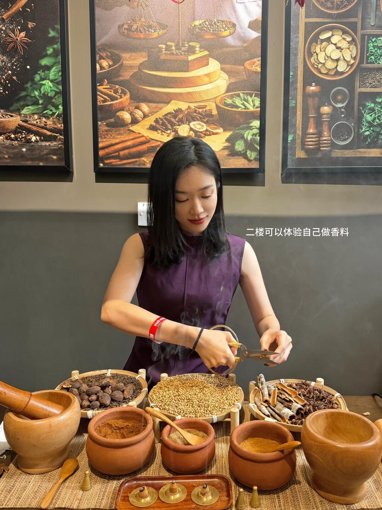
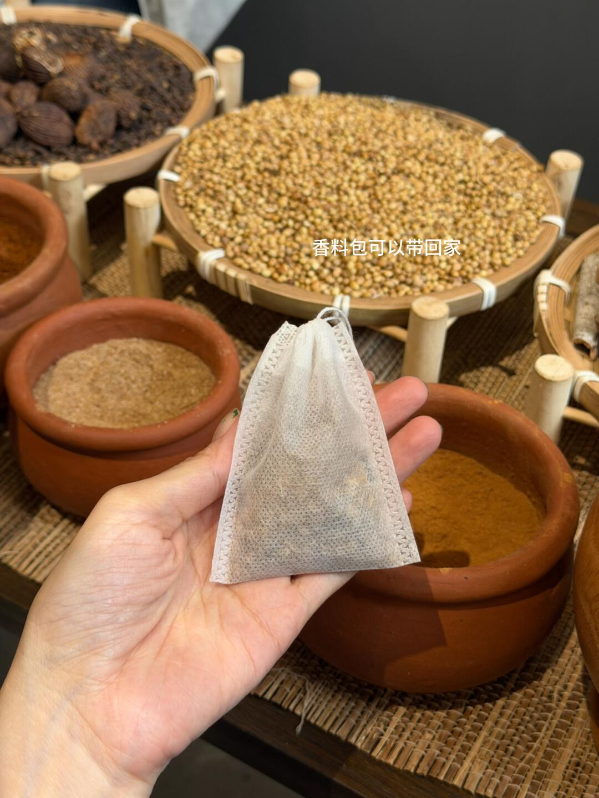
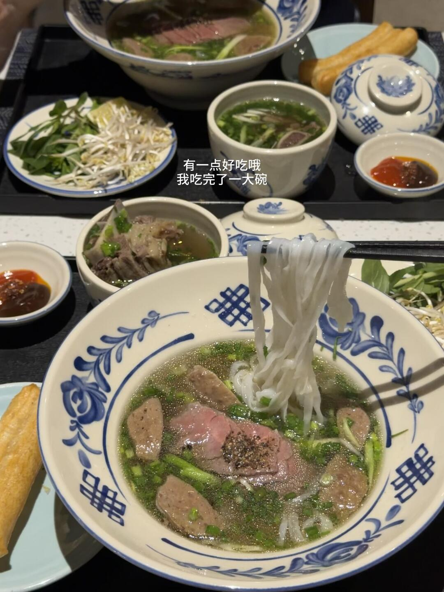
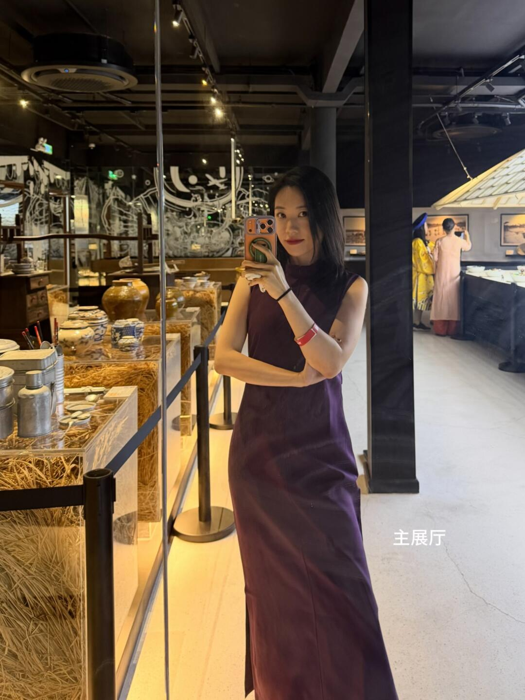
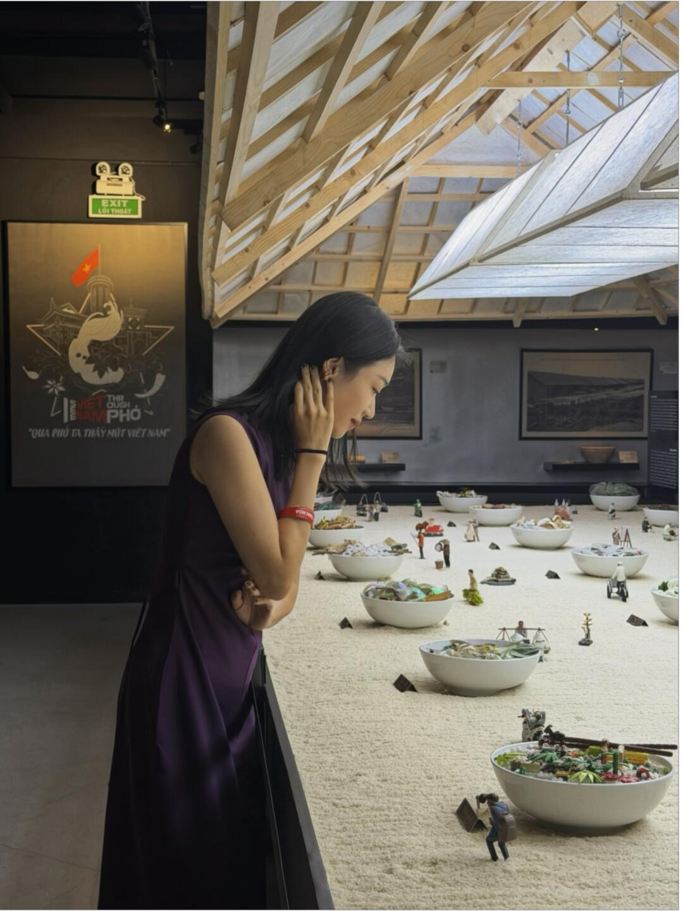
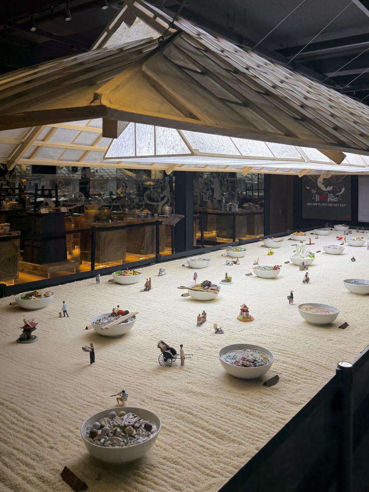
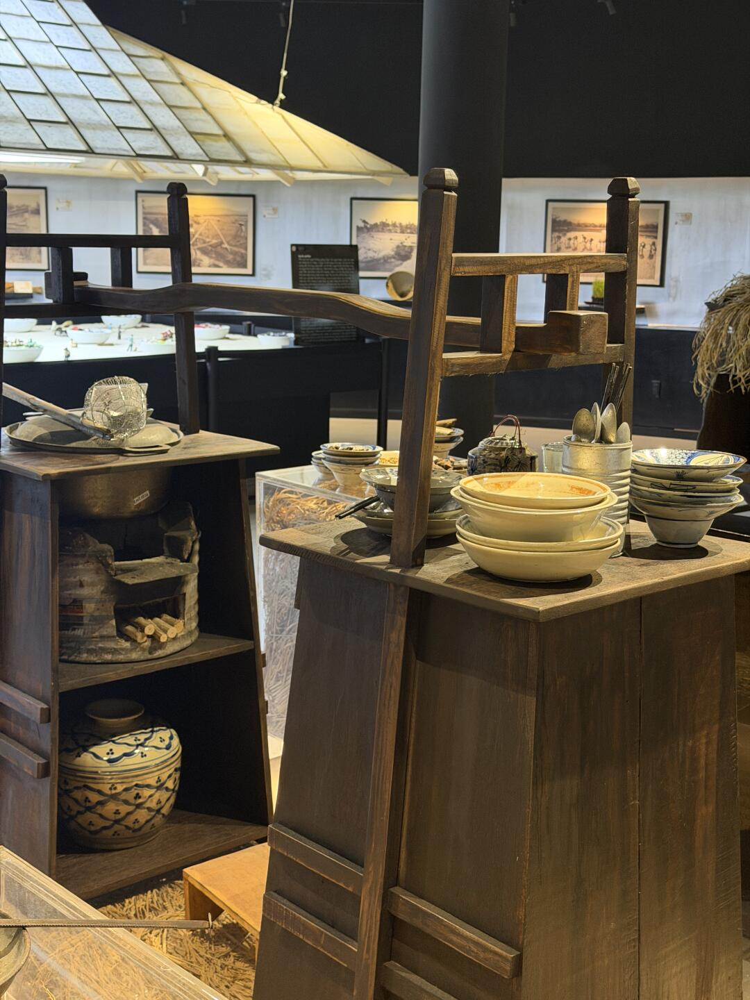
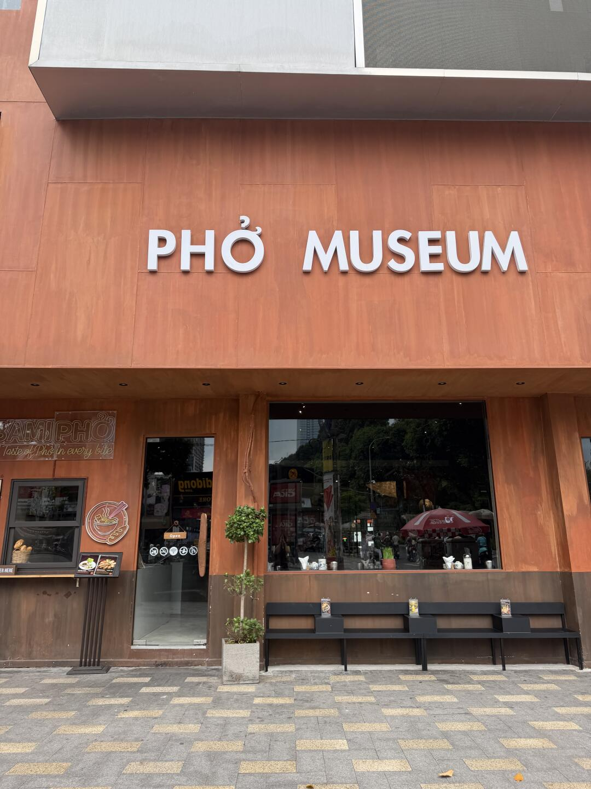
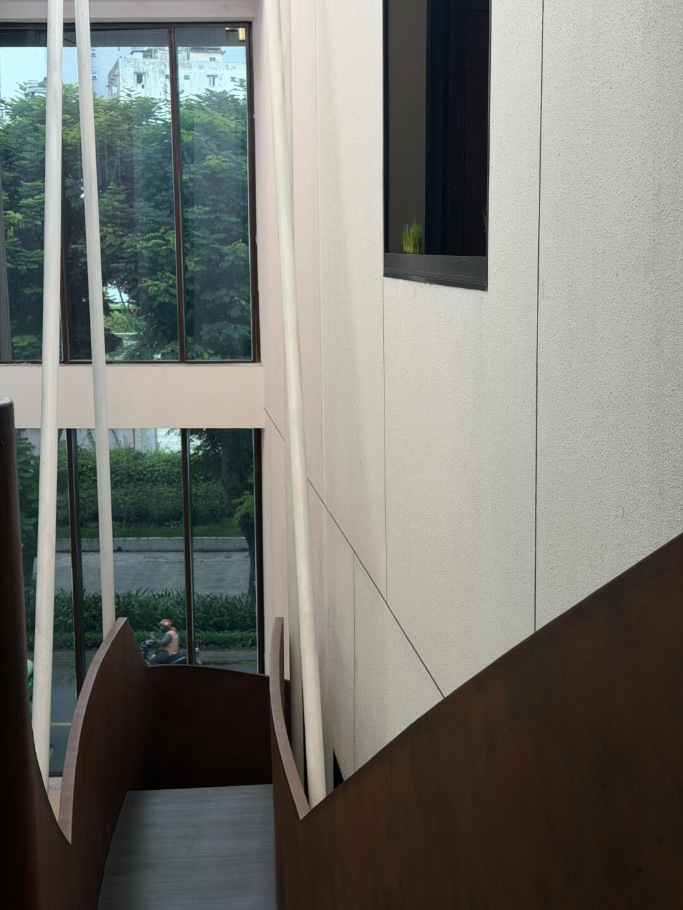
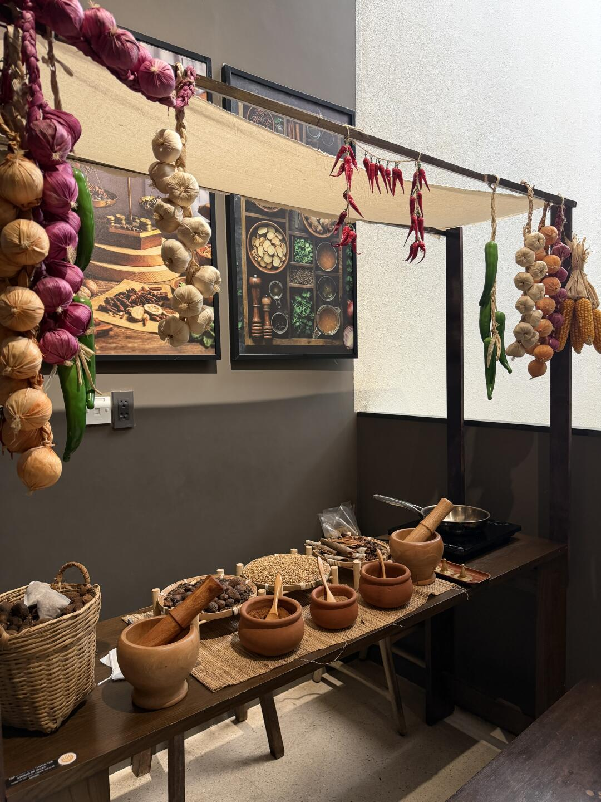

景點詳情
🍜 Phở Museum
Day 2 · 行程中的景點

簡介
此景點已列入 SAIGON STAYS 行程卡片；詳細參觀安排以出發前官方資訊為準。
地址
Nguyễn Thái Học 一帶
營業 / 開放時間
待確認，出發前請查看官方或 Google Maps 最新資訊
門票 / 價格
待確認，最終以現場 / 官方資訊為準
本頁只保留目前行程卡片已有的資訊；未核實的時間、票價、分店與活動內容不作推測。圖片來源已標註於上方，實際展示內容仍以來源頁面與現場為準。
📸 小紅書實拍（共 13 張）










